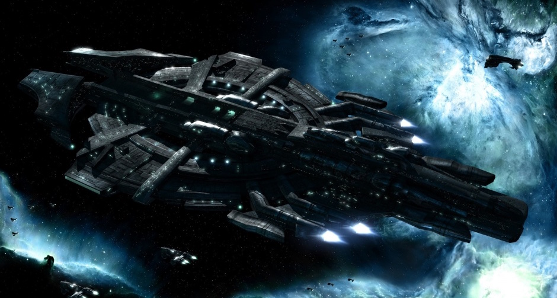
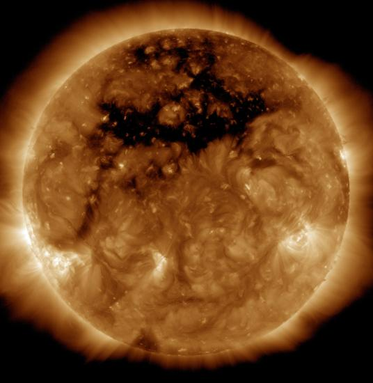

Since the dawn of the space age, only 552 humans have traveled above the Earth’s atmosphere and into space. Throughout five decades of human spaceflight, the national space agencies in the United States, Russia, and China have inspired the world. But because government space agencies are not asked to help ordinary citizens to become astronauts, most of our planet’s seven billion people have had no opportunity to experience space and all of its possibilities for themselves, regardless of their passion or talents.
On board our unique vehicles, Gemini astronauts will have an amazing, life-changing experience, as they earn their astronaut wings.
Our spaceflights will normally take place at the first light of day. Each crew of fully trained and prepared Gemini astronauts will participate in final pre-flight briefings, change into custom fitted flight suits. Then, watched by family and friends, they will take a short drive to board the spaceship, already mated to Orion and ready for departure.
Once all astronauts are safely onboard, Orion will take off and climb to an altitude of ~50,000 feet and after performing all necessary vehicle and safety checks, the pilots will release OrionTwo from Orion for the start of the next stage of the flight.
Within seconds, the rocket motor will be engaged, and OrionTwo will quickly accelerate to approximately three and a half times the speed of sound, producing moderate G-forces and propelling the vehicle and its crew on their way to space. After the rocket motor has fired for around a minute, the pilots will safely shut it down. Having just experienced a thrilling, dynamic rocket ride, the dramatic transition to silence and to true weightlessness will be a profound moment for our astronauts as they coast upwards towards space.
There is no discrete physical boundary between the Earth’s atmosphere and outer space. Different organizations have named different altitudes in an attempt to codify space’s official border:
Although its exact apogee may vary from flight to flight, OrionTwo is designed to reach altitudes above these thresholds.
As OrionTwo coasts up into space, our astronauts will leave their seats and experience true, unencumbered weightlessness. The pilots will maneuver the spaceship in order to give the astronauts the best possible view of Earth and the blackness of space from vehicle’s twelve large cabin windows.
After several minutes of weightlessness, our astronauts will return to their seats to prepare for re-entry. Personalized seats, custom-designed to safely support each astronaut during every phase of flight, will provide cushioning as the spaceship rapidly decelerates upon re-entry. Once OrionTwo has safely re-entered the atmosphere, the vehicle’s wings will be returned to their normal configuration, and the spaceship will glide back to the original runway. Upon landing, the newly-official astronauts will join their family and friends to celebrate their spaceflight in true Gemini style.